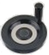

Preset automatico dell’utensile
In macchina, fissare il sensore in una posizione raggiungibile con un utensile montato sul mandrino. Procedere come segue:
- sul terminale premere il pulsante ; si attiva il movimento manuale degli assi;
- premere il pulsante per cambiare la selezione dell’asse;
- ruotare il volantino

per muovere gli assi X e Y fino a che l’utensile non sia esattamente sopra il punto di contatto del sensore di preset;
su Skipper, nella finestra di dialogo del Preset utensile,
- fare clic sul pulsante
 per acquisire dal CN le posizioni X e Y del sensore;
per acquisire dal CN le posizioni X e Y del sensore;
- scrivere 0 nello spessore del materiale e 0 nell’altezza del sensore;
- nella casella “abbassamento Z”, scrivere la quota Z che può essere raggiunta in rapido prima di incontrare il sensore; ricordate che gli utensili hanno lunghezze diverse;
- fare clic sul pulsante inviare i dati alla macchina;
- sul terminale premere il pulsante per eseguire l’operazione di preset automatico; questa operazione determina un nuovo valore di posizione iniziale per l’asse Z;
- ruotare il volantino per muovere gli assi X,Y e Z e portare manualmente l’utensile sul punto del piano che deve corrispondere a Z=0;
- sul telecomando, leggere la posizione Zo dell’asse Z;
- su Skipper, impostare questo valore, cambiato di segno, come nuovo valore di altezza sensore;
- fare clic sul pulsante inviare i dati alla macchina.